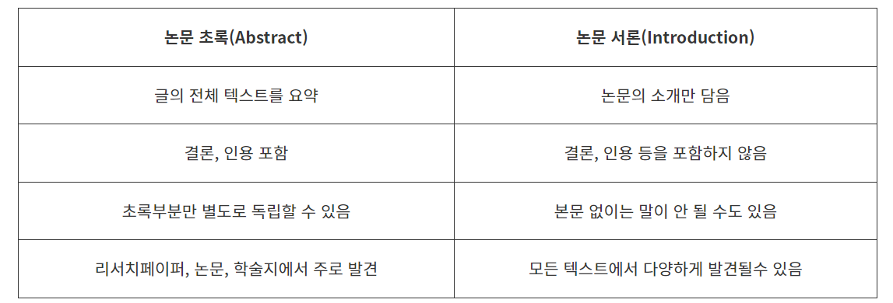

https://blog.essayreview.co.kr/difference-between-the-abstract-and-the-introduction-of-a-thesis/
논문 초록과 서론의 차이점
초록(Abstract)은 논문 전체 내용을 요약하여 연구배경, 연구목표, 연구방법, 결과, 결론 이 구조를 따라 작성되기 때문에 서론+본론+결론 모든 내용이 포함됩니다. 대부분의 학술지에서는 보통 200-300단어로 제한하기 때문에 최대한 함축하여 핵심만 담아내야 하며, 독자들이 누구든 읽기 쉽고 명확하게 작성돼야 합니다
서론(Introduction)은 연구 배경에 대해 자세한 정보를 제공하는 것이 목적입니다. 일부 저자들은 용어나 개념을 정의하거나 논문 순서를 설명하기도 합니다.

논문 초록(abstract)이란?
초록(abstract)은 저널 에디터와 연구원에게 논문을 간결하게 설명하고 자신의 논문을 읽도록 하는데 중요한 역할을 합니다. 온라인 데이터베이스 내의 수많은 논문 중에서, 자신의 논문을 읽도록 독자의 시선을 사로잡는 초록을 쓰는 일이 오늘날 더욱 중요해졌습니다.
논문 초록 작성 전 체크리스트
1. 초록 유형 정하기
모든 초록은 연구를 요약합니다. 초록은 크게 두 가지 유형으로 구분될 수 있습니다: 서술형 (descriptive) 및 정보형 (informative). 다음은 이 두 가지 초록에 대한 간략한 설명입니다:
서술형 초록(Descriptive abstract): 100-200 단어; 논문의 목적 및 방법 설명하지만 결과와 결론은 생략합니다정보형 초록(Informative abstract): 한 문단에서 1 페이지; 결과를 포함하여 연구의 모든 내용을 요약하는 연구 요약문
두 가지 유형 중 정보형 초록 (informative abstract)이 더 많이 사용되며 저널 및 컨퍼런스에 제출할 때 사용됩니다. 정보형 초록은 더 길고 전문적인 연구에 적용되는 반면, 서술형 초록은 더 짧은 논문과 글에 더 적합합니다. 어느 초록을 사용해야 하는지 결정하는데 있어 가장 좋은 방법은 저널 투고 지침을 따르고 저널 논문을 가능한 한 많이 읽는 것입니다.
2. 가이드라인과 요구사항 확인하기
명시된 특정 지침과 요구 사항을 항상 철저히 준수해야 합니다. 일반적으로 저널 가이드라인에 포함된 질문은 아래와 같습니다:
최대 또는 최소 단어/글자 수 제한이 있는가? 스타일 및 포맷팅 요구사항이 있는가? 적합한 초록 유형은? 특정 내용이나 구성이 포함되어야 하는가?
3. 잠재 독자 생각하기
초록의 주요 연구원들을 자신의 논문을 읽도록 연구원들을 사로잡는 것입니다. 학술 저널에서 초록은 독자가 연구가 자신의 관심 분야 또는 연구와 관련이 있는지를 알게 합니다. 초록은 독자로 하여금 자신의 연구의 논증을 빨리 이해할 수 있게 도와줍니다. 초록을 작성할 때 다음 질문을 고려합니다:
자신의 분야에 있는 다른 학자들이 논문의 타겟 독자인가? 자신의 연구가 일반 대중에게 유용할 것인가? 연구 결과가 더 광범위한 영향을 가지고 있는가?
논문 초록 구성방법
목적과 동기를 확인합니다. 왜 자신의 연구가 중요한가요 독자가 이 연구에 관심을 가져야 하는 이유를 설명하여 초록을 시작합니다—왜 자신의 분야에서 그리고 더 넓은 시각에서 자신의 연구가 중요한가요? 연구의 목적이 무엇인가요? 연구를 통해 성취하고자 하는 것이 무엇인가요? 아래 질문에 대답하여 시작합니다:
해당 연구가 다루는 문제를 설명합니다. 해당 연구가 다루는 문제를 언급하는 것은 왜 자신의 연구가 중요하고 필요한지를 설명하는데 있어 빼먹지 말아야 할 요소입니다. 아래는 다루어야 할 질문을 보여줍니다:
접근 방식에 대해 논의합니다 (Methods and Materials). 연구의 중요성, 연구를 하게 된 동기, 논문에서 다루는 구체적인 주제를 정한 후 해당 문제를 어떻게 해결했는지, 즉 연구를 수행한 방법에 대해 다루어야 합니다. 분석 모델, 시뮬레이션, 혹은 이중 맹검법을 사용했나요? 아래 사항을 명심하세요:
결과를 요약합니다. 해당 연구 결과를 설명합니다. 애매한 질적인 용어를 사용하지 않고 (예: “very,” “small,” “tremendous”) 양적 용어를 사용합니다 (예: 백분율, 수치). 아래와 같은 질문에 답합니다:
결론을 언급합니다. 초록의 마지막 부분에서 연구의 영향에 관해 언급합니다. 이를 연구 결과와 연결하여 설명합니다. 하지만 연구 결과에 대해 너무 과장해서 말해서는 안됩니다. 아래 질문 중 하나에 대답합니다: